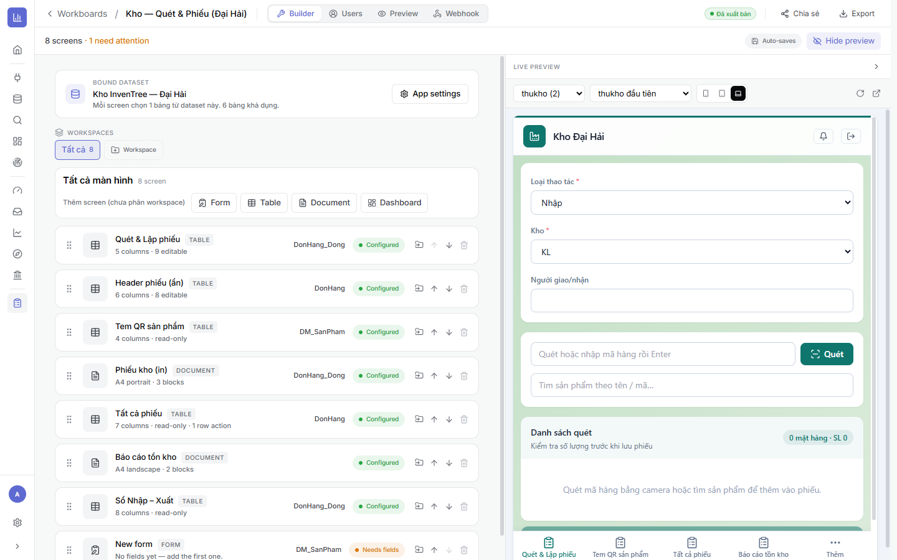
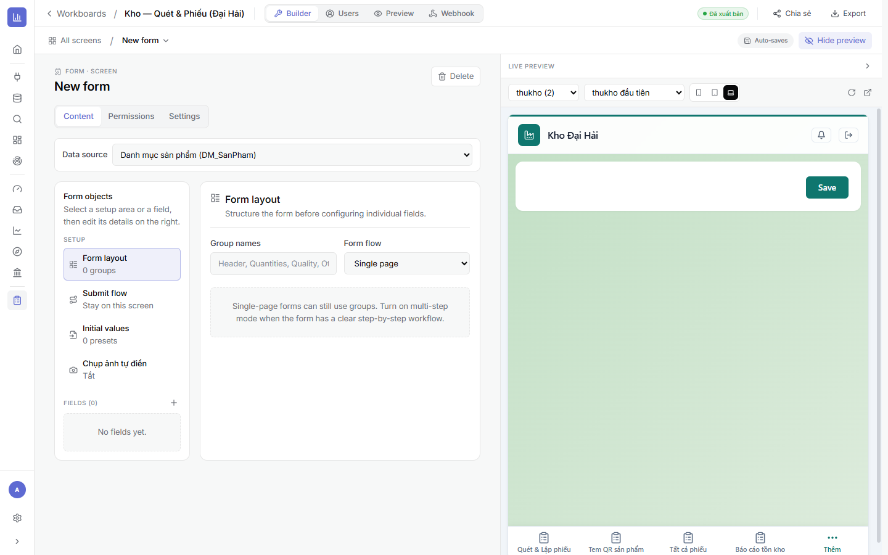
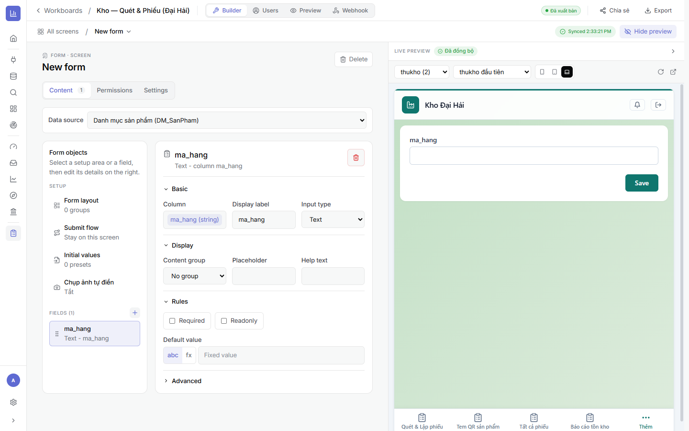
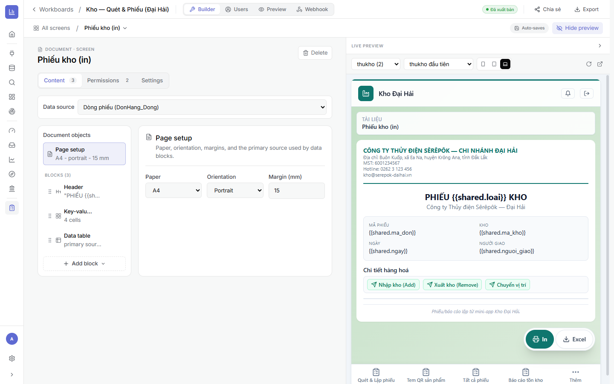

3.0Điểm chung của mọi screen
- Thêm screen: ở khu màn hình, chọn 1 trong 4 loại — Form · Table · Document · Dashboard.
- Mỗi screen có 3 tab: Content (nội dung), Permissions (ai xem/sửa), Settings (tiêu đề, icon, hành vi).
- Data source: mỗi screen chọn một bảng từ dataset nền.
- Thứ tự screen = thứ tự các tab dưới đáy app (thanh điều hướng) — kéo-thả để đổi.
- Trạng thái “Configured” là xong; “Needs fields” là chưa chọn cột/field.

3.1Màn hình FORM — nhập một bản ghi mỗi lần
Dùng để làm gì: phiếu nhập/đăng ký/khảo sát/báo cáo hiện trường — người dùng điền một bản ghi rồi Save. Hợp cho nhập liệu tuần tự, có kiểm tra ràng buộc.
⚙ Khu SETUP (bên trái)
- Form layout — chia field thành nhóm (group); chọn Form flow: Single page (một trang) hoặc multi-step (nhiều bước — hợp khi quy trình rõ ràng từng bước).
- Submit flow — sau khi lưu thì: ở lại screen / chuyển screen khác / reset để nhập tiếp.
- Initial values — đặt giá trị mặc định (preset) cho field khi mở form.
- Chụp ảnh tự điền (OCR) — bật để người dùng chụp ảnh phiếu, AI đọc và điền sẵn các field. Rất nhanh cho nhập liệu từ chứng từ giấy.

Cấu hình từng field
Bấm + ở khu FIELDS để thêm; mỗi field có:
- Column (cột dữ liệu) · Display label (nhãn hiển thị) · Input type (loại nhập — xem 32 loại bên dưới).
- Content group, Placeholder, Help text (gợi ý).
- Rules: Required (bắt buộc), Readonly (chỉ đọc); Default value theo giá trị cố định (
abc) hoặc công thức (fx). - Advanced: điều kiện hợp lệ (valid_if), tự động đánh số, quy tắc theo field khác…

ma_hang — Input type, label, group, placeholder, help, Required/Readonly, Default value (abc / fx công thức), Advanced.🎛️ 32 loại field (Input type) — biết để mò dùng
Ô Input type quyết định người dùng nhập kiểu gì. Đây là “vũ khí” của Form — gồm:
- Cơ bản: Text · Long text · Number · Email · Số điện thoại · Đường dẫn (URL) · Văn bản định dạng (Markdown) · Màu sắc.
- Số & đơn vị: Tiền tệ · Phần trăm (%) · Đánh giá (sao) · Thanh trượt (slider).
- Ngày & giờ: Date · Date + time · Giờ (time) · Khoảng thời gian.
- Chọn: Select (static — danh sách cố định) · Select (from table — lấy từ bảng khác) · Chọn nhiều (chips) · On/off (bật/tắt).
- Media & hiện trường: Image upload · Nhiều ảnh (chụp thực địa) · File upload · Video (clip ngắn) · Ghi âm ghi chú · Chữ ký tay · Vị trí GPS (chấm công/định vị) · Bản đồ (chọn vùng trên map) · Quét mã QR/Barcode.
- Tự động & quy trình: Tính tự động (công thức) · Trạng thái/duyệt · Mã QR (hiển thị/in tem).
3.2Màn hình TABLE — bảng nhiều dòng, sửa trực tiếp
Dùng để làm gì: nhập/sửa nhiều dòng nhanh (sổ nhập-xuất, danh sách công việc, giỏ hàng), xem dạng bảng hoặc thẻ ảnh, và bán hàng kiểu POS (quét mã → gom giỏ).
⚙ 14 tuỳ chọn của Table
- Visible columns — chọn cột hiển thị & thứ tự.
- Editable columns — cột nào cho sửa (còn lại chỉ đọc).
- Row behaviour — cho phép Thêm / Xoá hàng.
- Chế độ POS (quét → giỏ) — quét mã hàng để tự gom vào giỏ/phiếu (kho, bán hàng).
- Paging & sorting — số dòng/trang & sắp xếp mặc định.
- New row defaults — field bắt buộc & giá trị mặc định khi thêm hàng.
- Footer totals — dòng tổng ở chân bảng (tổng số lượng, thành tiền…).
- Empty state — thông điệp khi chưa có dữ liệu.
- Chế độ hiển thị — Bảng hoặc Gallery (thẻ ảnh, gom nhóm).
- Header groups — gộp nhiều cột dưới một tiêu đề nhóm.
- Row merge — gộp ô trùng theo cột.
- Column presentation — nhãn/định dạng hiển thị cột.
- Detail panel — mở bảng chi tiết khi bấm vào một hàng.
- Định dạng có điều kiện — tô màu ô/hàng theo điều kiện (ví dụ tồn < mức → đỏ).
3.3Màn hình DOCUMENT — trang in A4 (phiếu/hoá đơn)
Dùng để làm gì: tạo phiếu/hoá đơn/báo cáo in đúng khổ giấy — người dùng bấm In hoặc Excel để xuất. Nội dung tự điền từ bản ghi đang chọn bằng placeholder {{shared.tên_cột}}.
⚙ Cấu hình
- Page setup — Paper (A4…), Orientation (dọc/ngang), Margin (mm), bảng nguồn chính.
- Blocks — ghép trang từ các khối: Header (tiêu đề/logo công ty), Text (đoạn văn), Key-value grid (các ô mã phiếu/ngày/người giao…), Data table (bảng chi tiết hàng hoá), Mã QR, Spacer (khoảng cách).
- Chèn dữ liệu động bằng
{{shared.ma_don}},{{shared.ngay}}… trong Header/Text. - Người dùng cuối bấm In (in giấy/PDF) hoặc Excel.

{{shared.ma_don}}, chi tiết hàng hoá, nút In / Excel.3.4Màn hình DASHBOARD — biểu đồ & KPI trong app
Dùng để làm gì: đưa báo cáo (chỉ đọc) vào ngay trong mini-app — KPI, biểu đồ tồn kho, doanh thu… để quản lý xem nhanh mà không cần rời app.
⚙ Cách làm
- Thêm screen loại Dashboard.
- Nhúng các biểu đồ/KPI (tái sử dụng chart đã lưu ở Explore, hoặc tổng hợp từ bảng của dataset).
- Đây là màn xem — không nhập liệu; hợp làm tab “Báo cáo/Tổng quan” trong app vận hành.
3.5Quyền theo screen & thiết lập
- Permissions (tab) — giới hạn role nào xem/sửa screen này (kết hợp App Users & RLS ở Chương 4). Ví dụ chỉ “quản lý” thấy màn Báo cáo.
- Settings (tab) — tiêu đề, icon, ẩn/hiện, hành vi mở của screen.
- Row action (trên Table) — nút thao tác trên từng hàng (mở phiếu, đổi trạng thái…).
3.6Checklist & gợi ý phối hợp
- ✅ Chọn đúng loại screen theo việc: nhập 1 phiếu → Form; nhập nhiều dòng/POS → Table; in giấy → Document; xem báo cáo → Dashboard.
- ✅ Form: chọn Input type phù hợp (QR/GPS/ảnh/chữ ký…), đặt Required & công thức cần thiết.
- ✅ Table: bật Thêm/Xoá, Footer totals, định dạng có điều kiện đúng nghiệp vụ.
- ✅ Không còn screen “Needs fields”; xem trước chạy đúng.
➡️ Tiếp theo: Chương 4 · App Users & RLS — cấp tài khoản & phân quyền dữ liệu.